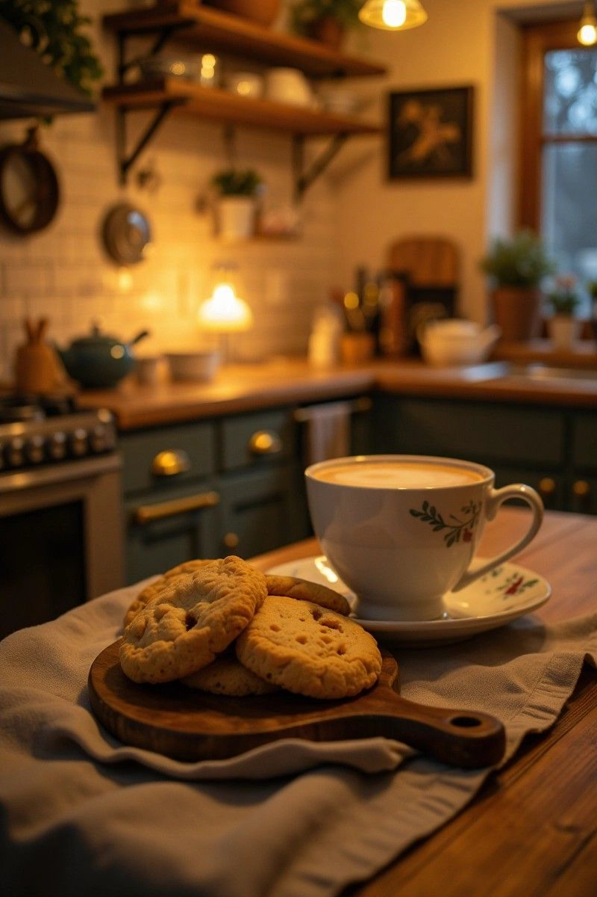

This isn’t a recipe site. It’s a place where I turn moments into meals. they’re stories. Some were born from loneliness, some from rush-hour comfort, and some from feelings I didn’t know how to explain. So I wrote them here messy, honest, and a little handwritten.
Some days I don't want to talk – so I cook.
Some days I celebrate – so I cook.
Some days I'm just bored – so… yeah, noodles again.
– Trushti S.
